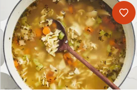

Stew

This is a plate of stew
Ingredients
- Tomatoes
- Onions
- Galic
- Salt
- Potatoes
- Meat
- Carrots
- Cooking oil
- Green grams
procedure for cooking
- Boil the green grams properly and meat
- Wash the onions, tomatoes, and carrots
- Carefully cut the onions in small pieces
- Cut the tomatoes also in small pieces and carrots
- Put the cooking pan on the source of heat and smear cooking oil on it
- Wait it to gain heat and place the pieces of onions on the cooking oil
- Allow them to cook until they are golden brown
- Now place the tomatoes and carrots and mix them properly
- Allow them to cook for five minutes while stiring
- Add the poatoes and mix properly
- Add the green grams and meat and mix them properly
- Allow them to cook for thirty minutes and serve it while hot